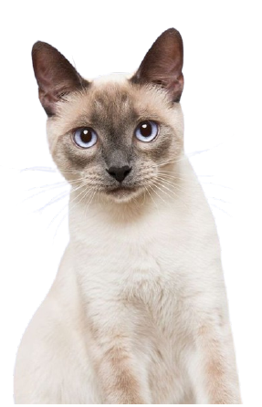

<!DOCTYPE html>
<html lang="es"></html>
<html>
    <head>
        <title>Pet Care</title>
        <meta charset="utf-8">
        <link rel="stylesheet" href="css/equipo medico.css">
        <link rel="shorcut icon" type="image/icon" href="img/Mesa de trabajo 1.png">
        <meta name="author" content="Vanesa Carrion">
        <meta name="keywords" content="sitio web petcare, proyecto final, 2 trimestre,Bogotá,colombia">
        <meta name="description" content="Inicio,quienes somos, pagina incial petcare">
        
    </head>
    <body>
        <header>
            <a href="index.html" class="logo">
                
            </a>
            <nav>
              <a href="index.html" class="nav-link">Inicio</a>
              <a href="Servicios.html" class="nav-link">Servicios</a>
              <a href="Équipo medico.html" class="nav-link">Équipo médico</a>
              <a href="Testimonios.html" class="nav-link">Testimonios</a>
              <a href="Contacto.html" class="nav-link">Contacto</a>  
    
            </nav>
           </header>
    

    
    <h1>Équipo médico</h1>
    <h2 class="intro">Nuestro principal objetivo es el cuidado de tus mascotas por eso<br>
         contamos con un equipo de especialistas con amplia <br>
         experiencia y compromiso que ofrecen valoraciones precisas<br>
          y tratamientos de calidad.</h2>
 
          


          
          <div class="doctores">
   
   
    
   
</div>


<div class="caja1">
<div class="div1">
    <h2 class="nombre1">DR Paola Bermudez</h2>
    <p class="one">Directora médica <br>
        6 años de experiencia en medicina y <br>
     cirugía de perros y gatos.</p>
</div>

<div class="div2">
    <h2 class="nombre2">DR Fabian Lopez</h2>
    <p class="two">Internista y ecografista<br>
        4 años de experiencia en enfasis de<br>
        ecografía de animales.</p>
</div>

<div class="div3">
    <h2 class="nombre3">DR Thania Bohorquez</h2>
    <p class="three">Oftalmóloga<br>
        5 años de experiencia en medicina ocular <br>
        y trata de afecciones.</p>
</div>
</div>

<div class="div4">
    <h2 class="nombre4">DR Carlos Martinez</h2>
    <p class="four">Oncólogo<br>
        4 años de experiencias en interpretación <br>
        adecuada de signos.</p>
</div>
<div class="div5">
    <h2 class=" nombre5">Camila Rojas</h2>
    <p class="five">Médica Veterinaria y fisioterapeuta<br>
        6 años de experiencia en fisioterapia y <br>
        rehabilitación de caninos y felinos.</p>
</div>
 
<div class="divg">
    
    
    
    
</div>
</div>
<footer>
    <div class="lfooter">
        <a href="index.html"></a>
        <p class="copy">&copy;2024 Página Pet Care- Todos los derechos reservados</p>
    </div>
  
</footer>


</body>
</html>